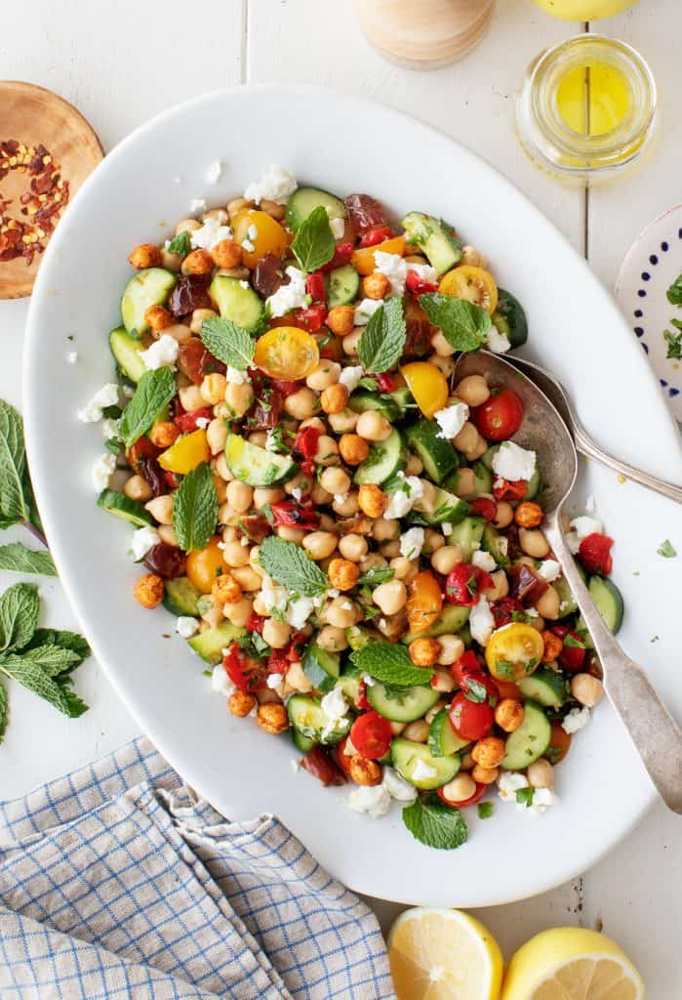

Greek Salad
Greek salad, also known as horiatiki salata, is a traditional salad of Greece.
Greek salad is a refreshing and healthy dish that is perfect for a light lunch or dinner. It
is also a popular dish to serve at parties and gatherings.
Ingredients
- ¼ cup extra-virgin olive oil
- 3 tablespoons red wine vinegar
- 1 garlic clove, minced
- ½ teaspoon dried oregano, more for sprinkling
- ¼ teaspoon Dijon mustard
- 1 English cucumber, cut lengthwise, seeded, and sliced ¼-inch thick
- 1 green bell pepper, chopped into 1-inch pieces
- 2 cups halved cherry tomatoes
- 5 ounces feta cheese, cut into ½ inch cubes
- ⅓ cup thinly sliced red onion
- ⅓ cup pitted Kalamata olives
- ⅓ cup fresh mint leaves
- ¼ teaspoon sea salt
- Freshly ground black pepper
Instructions
- In a small bowl, whisk together the olive oil, vinegar, garlic, oregano, mustard, salt,
and several grinds of pepper.
- On a large platter, arrange the cucumber, green pepper, cherry tomatoes, feta cheese,
red onions, and olives. Drizzle with the dressing and very gently toss. Sprinkle with a
few generous pinches of oregano and top with the mint leaves. Season to taste and serve.

Chick Pea Salad
Chickpea salad has been one of my go-to lunches for
years. With back-to-school season right around the
corner, I thought I’d share my favorite chickpea
salad recipe with all of you! Because of the protein
from the chickpeas, it’s hearty enough to be a meal
on its own, but it can also double as a healthy
side dish. The garbanzo beans hold up well in
the fridge, so you can easily make it ahead for
parties and lunches. And with a mix of beans,
herbs, and fresh vegetables all cut to a
similar size, you get a delicious blend of
flavors in every bite.
Ingredients
- Goat Cheese
- Medjool dates
- Persian Cucumbers
- Cherry Tomatoes
- Roasted Red Pepper
- Chopped fresh parsley
- Chickpeas (roasted if you like)
- Basil or Mint
Instructions
- Aside from the pan for toasting the
cumin seeds, this bean salad comes
together in one bowl! Just toast
the seeds for 30 seconds or so until
fragrant, crush them lightly
with a mortar & pestle, and whisk
them together with the other
dressing ingredients.
- Add the veggies, dates, chickpeas,
and parsley, and toss. Then, dot on
the cheese, remaining herbs, and roasted
chickpeas, and serve!